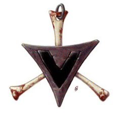
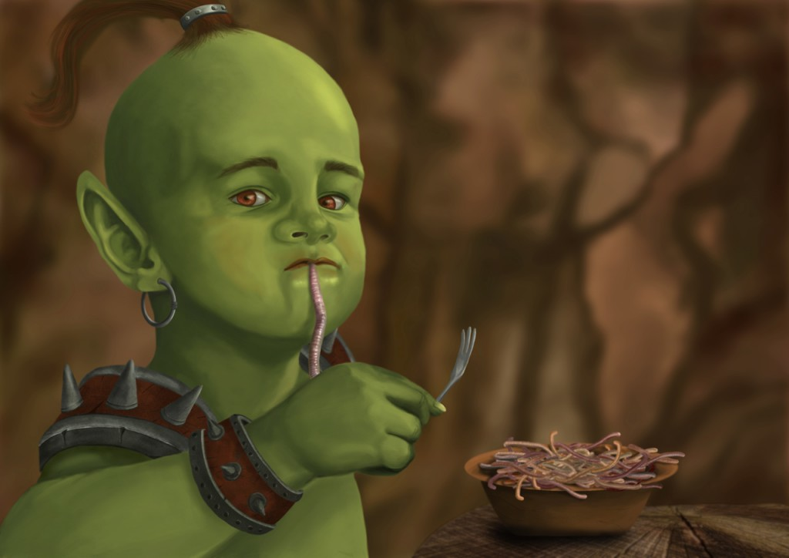
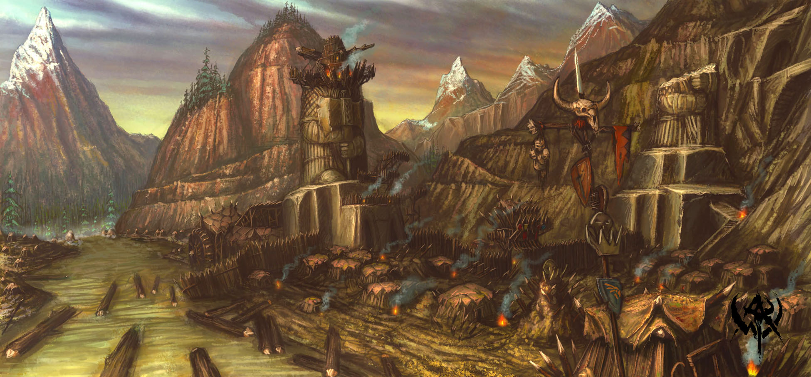
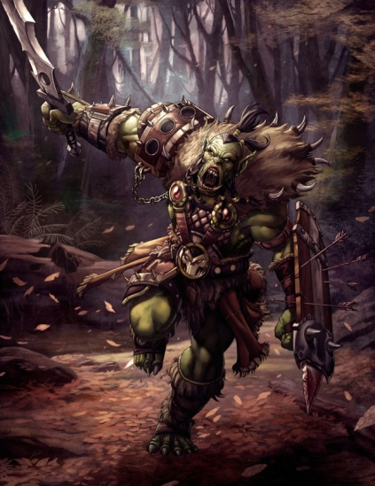
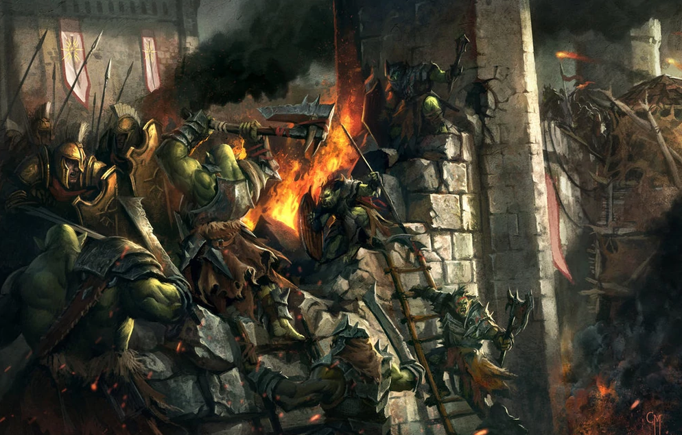
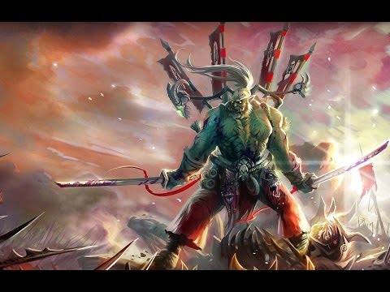
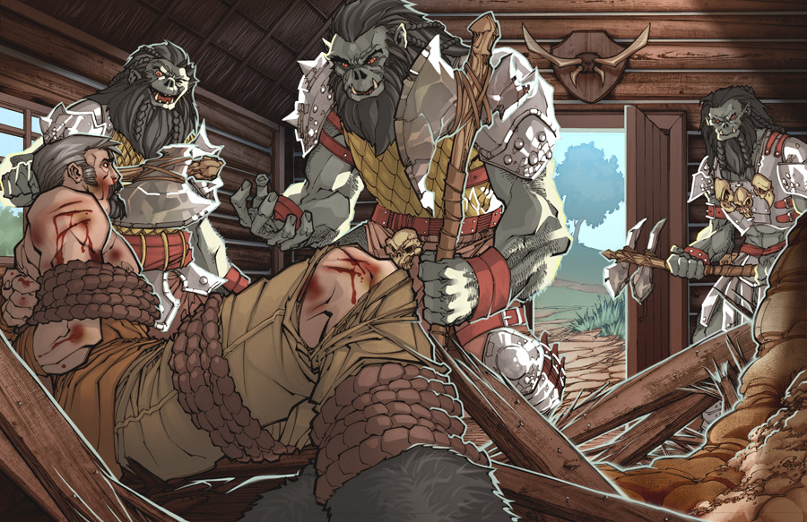
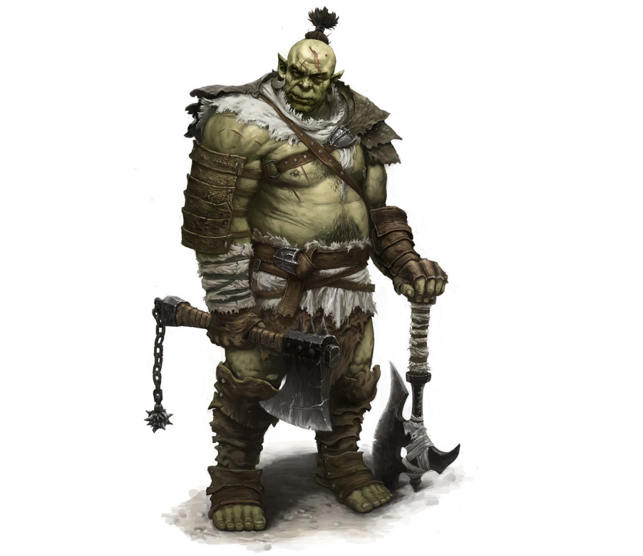
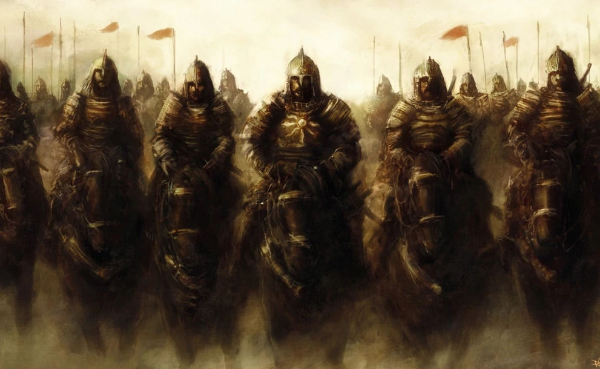
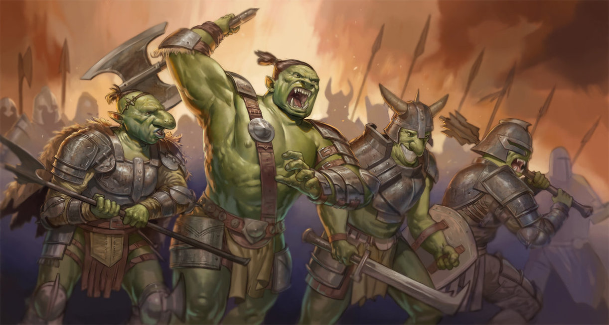

This is the interactive story of Grub the Orc.You will go through different parts of his life and help him make the right choice.Every decision you make will change the ending in different ways. Help him earn the title Chieftain of Chieftains.But that will require only the most special orc and a dose of luck ofcourse. Have in mind that if you refresh the browser you will restart the game.
You can navigate to different parts of his history and decide how his story unfolds.Once you are done you will be able to see the result.As always, luck also plays a part so even the same choices may yield different results.Good Luck!
Here you will have to react to few situations, throughout Grub's life.Based on the response his Character will be determined. This is very important part.Think carefully!
Chapter 1: "Baby"
You are born in Orzammar - an orc camp near the border.In Orcish society usually little orcs are teached their parents trade.Warrios are fierce fighters.Bone Crushers are special berserkers who go naked into battle with huge clubs or axes.Hunters are skilled in bows and crossbows.Chieftains are little more smart then the rest and are born to rule.
Tell me in what family are you born:
Answer:
Chapter 2: "The Camp"
You grow peacefully in an Orcish camp in the mountains.Its a great place where you hunt and fight with your friends. A day hardly passes without a new fight between the kids.Little by little you crush everybody's skull a few times, untill they start to fear you and respect you.All but one.Your best friend: Balgrub.Whataver you do he is just so massive, strong and quick that he always beats you into the dirt.
One day you go with Balgrub on a hunt. Just the two of you in the forest.But you stray too far and you get surprised by 5 human huntsmen with their 3 dogs. Fierce fighting starts all around.You slay one of the dogs very fast but your first human opponent closes on you with 2 swords.He is a tall middle-aged man with many scars and he moves like a panther.He has the looks of an experienced fighter who has seen many fights. The battle is very hard and bloody.Every attack you make, he parries and counter-attacks immidiately.You almost loose your life to him but finally you bury your great axe into his skull.You turn around and see Balgrub has defeated all the rest 4 humans and the 2 dogs.It is just unbelievable.He fought like a deamon of death and you barely killed one human and a dog.
However he is wounded.Very badly.He is unconscious and full of wounds.Suddenly an Orc warparty from the camp shows in the far distance. You can quickly kill Balgrub and will be the strongest orc and get all the credit.Everybody will think the humans did it.Or you can admit what happened.What do you tell the coming orcs?
Answer:
Chapter 3: "The Battle of Moonwatch"
After the small battle in the forest tensions rise between orcs and humans.You dont like each other anyway, but managed to stay out of each others way for some time.Usually just small groups battle here and there.But now Human insursions into Orcish lands have risen exponentially.
After another such incursion the chieftains of the nearby camps gather.They decide you have to teach the humans a lesson and gather a big war-party.You ofcourse are amongst them.About 500 orcs cross the border and attack the closest human city of Moonwatch. The battle is fierce.You climb the walls with ladders and they rain arrows and stones upon you.Many of your comrades fall before even reaching the wall.But orcs dont give up easily and you go into a battle rage.Time stops.Seconds pass as hours.You hear screams and arrows flying all around you.But you hear them somehow in the distance.Only thing that matters is to get to the enemy.
All of a sudden you find yourself on top of the wall with battle raging all around you.All of your army is behind you climbing the walls and you realize you have to wait for them.With Bloodlust in your eyes you can also jump forward alone, amongst the enemies.That could be suicide ofcourse.So do you jump or wait?
Answer:
Chapter 4: "Captives"
After the hard battle you have captured the city.Many lie dead and wounded.In their commander tower you find plans of attack into your lands of a great army.Ten nearby human cities are gathering soldiers to set your lands on fire and destroy you once and for all.
You also find that there is division amongst them.Some human commanders think there should be peace between humans and orcs. You have captured around 300 prisoners.Mostly women and children but also some soldiers.Because you were first on the wall it is Orcish tradition for you to decide what to do with them.
You can kill them all.You can send all of them to the mines to work for the orcs untill they die.You can kill the men and enslave the rest, to be trained as your slaves.Or you can let them go peacefully.So what do you do with the prisoners?
Answer:
Chapter 5: "Challenger"
You return from the raid as a hero.Because the last chieftain of the camp has died in the battle, you are chosen as the new one. You barely have gotten the position and start to enforce yourself as chieftain, when one night in the big orcish hall a huge surprise happens.
In the middle of the feast the door opens and your old friend Balgrub enters.He has managed to survive somehow and have been wandering in distant lands since then.He has become a great warrior with scars all over his face and determination in his eyes.Many still remember his fists and the great hall goes quiet.He openly comes to you and tells you, that you are not fit to rule.He however claims that it is his rightful place, as a chieftain of the camp.He says he will let you be his army commander and right hand if you step down peacefully.All eyes turn to you.
You can fight him as is orcish tradition but you know he is very strong.You can command the men to kill him, after All you are commanding chieftain.You can step down and admit he is better.Or you can tell the others to imprison him untill he comes to his senses. So what do you do with your old friend Balgrub?
Answer:
Chapter 6: "The Battle of Orzammar"
As you suspected not long after the battle for Moonwatch, you start getting reports of a great human army moving towards the border.Your scouts report no less then 5000 humans marching on Orzammar.All of them well equipped and in full armor.Also 500 of them heavy knights on horses.You immidiately send word to all the nearby camps for help.Some of them answer and some dont.
Finally the human army crosses the border.You have gathered 1500 orcs altogether.All of them bloodlusty and battle-hardened.Also 300 of them are Bone Crushers.Huge crazy berserkers who go naked into battle and strike fear into enemies hearts.
But the humans are just too many.This decision is very important for the survival of the orcs in this lands.
You can personally lead a head-on assault and put the berserkers in the vanguard.You hope brute Orcish strenght and bravery will carry the day.Other option is for you to make an ambush.You know your mountain passes well.It will not be hard to surprise the enemy in the narrow passes where numbers dont count.But many of your commanders say this strategy is cowardly.There is a small chance, that they will uncover the ambush and you will pay dearly.
You can also order a retreat.They are just too many.You will burn your camp and retreat to the mountains and live another day. Last option is to wait for them to come and sue for peace.Enough war between Humans and Orcs.Let peace carry the day.If this fails and they attack, you will defend your camp anyway.Although you will not have the element of surprise.
So what do you command the army?
Answer:
Every great orc should have a wife.Grub being the handsome Orc that he is, makes no exception.But regarding women we have actually no realy choice.Our heart desires what our heart desires.Your wife may add to your prestige and strenght or diminish them.
Roll the dice so you can see the wife Destiny has chosen for you.
This is where you will see the end of Grub's story.Please press reveal after you have answered everything.